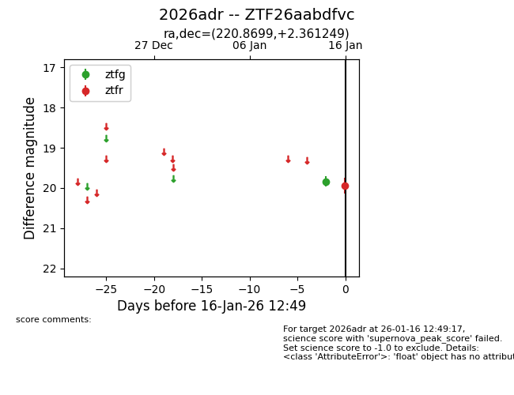
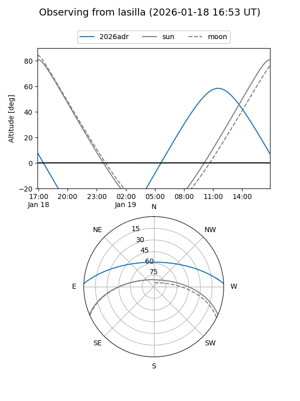
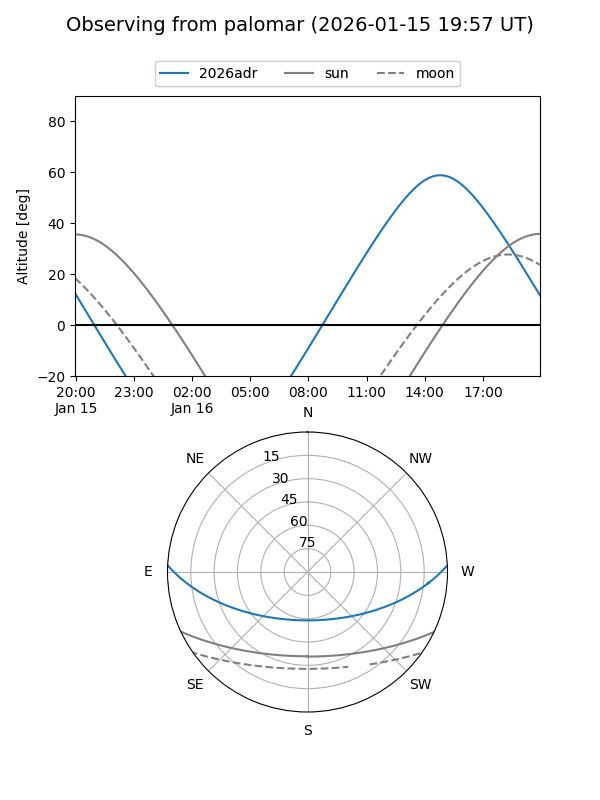
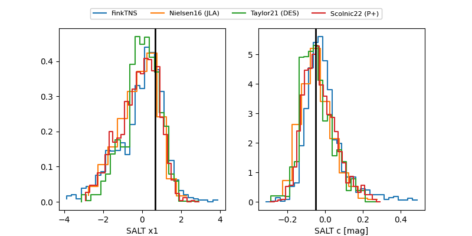

2026adr
Target 2026adr at 2026-01-16 12:50
Aliases and brokers:
FINK: link
Lasair: link
ALeRCE: link
TNS: link
YSE: link
alt names
ZTF26aabdfvc (ztf,fink_ztf)
2026adr (tns,yse)
Coordinates:
equatorial (ra, dec) = 220.8699,+2.36125
equatorial (HMS+DMS) = 14:43:28.77,+02:21:40.50
galactic (l, b) = (355.0111,+53.49996)
Flags:
Photometry:
last ztfg=19.84, ztfr=19.94
1 ztfg, 1 ztfr detections
Lightcurve

Visibility


Additional plots
